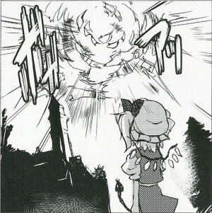
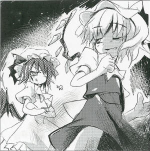

Enormous Shooting Star Explodes in Mid-air
Meteorite impact crisis avoided.〇 Month 〇 Day, around 11:00 PM. In the atmosphere above Gensokyo there was a violent explosion of sound and light.
The light was actually the large explosion of a shooting star.
Surprisingly, it was later confirmed that this explosion was created artificially.
This time, I'd like to touch on the mystery while reporting on the shocking contents.
The one who made this shooting star explode was Flandre Scarlet (a vampire).
She's the sister of Remilia Scarlet, mistress of the Scarlet Devil Mansion.
The reason she blew up this meteorite is explained below.
A shooting star? Look, to me something of that level is a pushover.
Like 'kyu kyu kyu,' right?
First of all, who cares about one little meteorite?
Can't they understand that something like meteorites are meaningless to me?
I'm more scared of spears falling.
Actually, I'm more afraid of rain.
Ah, manjuu aren't scary at all.
Though it was mostly too incoherent to tell the meaning, at least I found that blowing up the shooting star was easy for her.
I asked her how she blew up the meteorite.
You know, everything has a thing, 'eye'.
If I poke it like 'kyu', 'kaboom' will happen.
Eh? How did I get close enough to the shooting star to poke it in the eye?
The shooting star's eye is right here.
Right in my hand. Or should I say the eye of everything is in my right hand.
So I did 'kyuu' easily and...
My investigation almost proved fruitless; however, I was able to have a very interesting talk with mistress of the Scarlet Devil Mansion at the end.
According to what I heard, the meteorite was actually heading directly toward the Scarlet Devil Mansion.
In addition, I heard how the meteorite was planned for that very day.
It was planned that the meteorite would fall on the Scarlet Devil Mansion on that day at that hour.
Without intervention, not only the Scarlet Devil Mansion but the surrounding area would have suffered enormous damage.
Only, the little sister blowing up the meteorite was also part of the plan.
That's all I heard about the mistress, but it certainly was a strange talk.
The temperature rose and flowers are starting to open. It feels like spring has already come.
Even if it is so warm, be careful not to catch a cold.
Flandre 
The ending is strange.
Aya
The incident was rather strange. I guess it maybe a work of spring weather.
Flandre
It's no good writing a newspaper when it can't be beyond facts, isn't it?
Aya
The newspaper neither passes facts nor reports amusingly.
Flandre
Ahh, it's spring already. Will the first tea be soon?
Aya
I have a feeling that asking you again will be a waste of time, but I'll ask one more time. No matter how, you really blew up the meteorite, didn't you?
Flandre
I went kyu and it went boom.
Aya
Is what Miss Remilia said the truth?
Flandre
About planning for the meteorite? There is no way that is true. That person just talks that way.
Aya
Her favorite saying?
Flandre
Yeah, that's it. That person acts like she understands everything from the beginning. She talks about understanding fate or something.
Remilia
Hey, you shouldn't call your elder sister that person.
Flandre
Oh, how long have you been standing behind me? Big sister?
Aya
Oh, this is great timing. Just talking to the younger sister is...
Flandre
What? Are you saying you're not getting through to me?
Aya
Exactly. You even realized that yourself, did you?
Remilia
So, what's this about good timing?
Aya
About the meteorite explosion the other day...
Remilia
Oh, that? Such a meteorite exploding goes with impunity.
Aya
...What did you mean when you said that it was planned?
Remilia
Are you saying you don't understand Japanese, even though you write a newspaper story?
Aya
Pardon me, but I have a hard time believing that you two are speaking Japanese.
Flandre
Just how long has it been since the arrival at Gensokyo?
Remilia
I'll explain once again. The meteorite was not just planned ahead, it was made to fall through artificial means. It was aimed directly at our Scarlet Devil Mansion.
Aya
You call that Japanese?
Remilia
Make no mistake, it's old Japanese. As proof that the meteorite was artificial, look at this meteorite fragment right here. It's clumped together using a magic spell, see?
Flandre
The spell isn't in Japanese, is it?
Aya
...
Remilia
See, do you still not understand what is happening?
Aya
So, you're saying that someone used this meteorite to attack you, and that you fought back...
Flandre
Dunno. I'll ask again. The spell written on the meteorite isn't Japanese, right?
Aya
It doesn't look Japanese to me, at least.
Remilia
No, it's old Japanese. Old, old Japanese. It's written as Leo meteor shower.
Aya
...Oh, my. I wonder how much of that is true.
Profile:
Flandre Scarlet
Remilia's sister who holds the power to destroy everything.
She usually can't leave the house because of her emotional instability.
Appearances:
Embodiment of Scarlet Devil